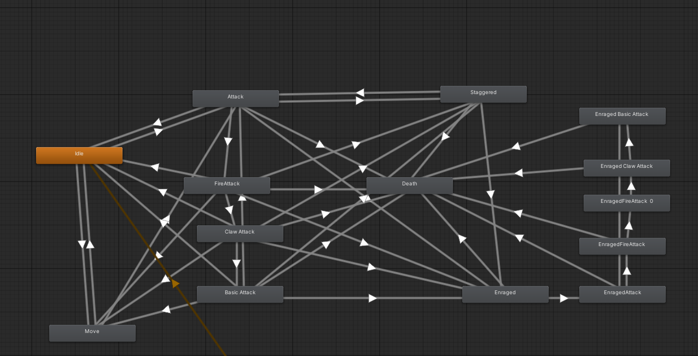
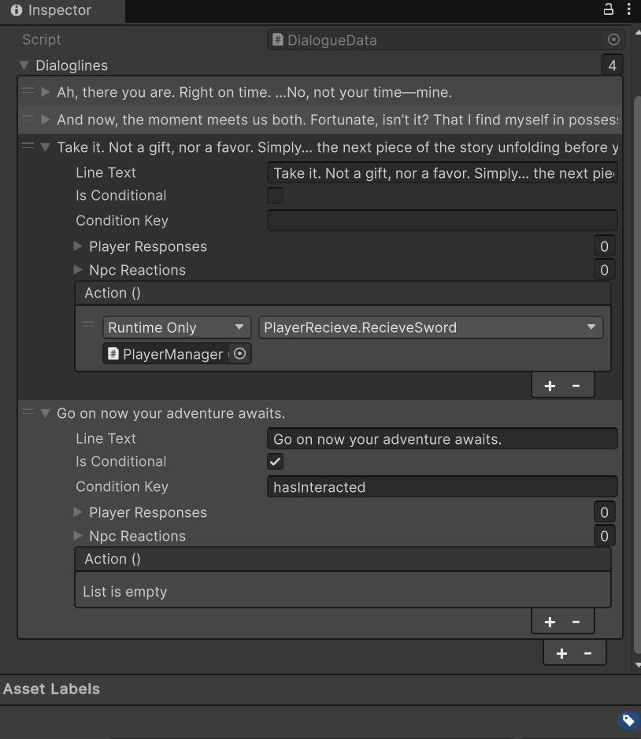
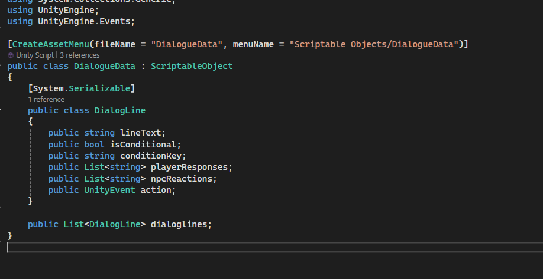
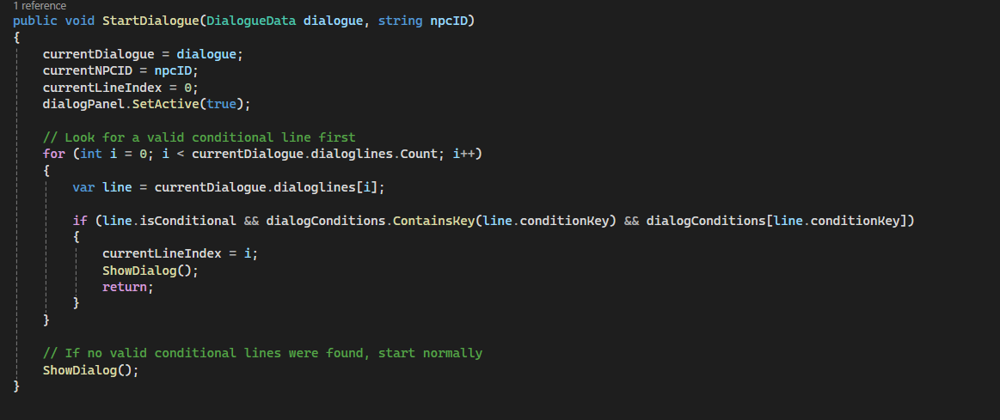

I'm a gameplay programmer with experience shipping games and interactive applications across PC, VR, and mobile.
I work in both Unity and Unreal Engine 5, with a focus on building systems that are modular, designer-friendly,
and fun to interact with such as ability systems, AI state machines, VR interactions, and branching dialogue.
Currently I'm contributing to an indie project at Fear Elements Studio, building a data-driven ability system
in UE5 Blueprints with cooldown management, state transitions, and input routing. On the professional side
I work as a developer at Truck Part Solutions, where shipping real production code every day has sharpened
how I think about architecture and maintainability.
I care about the craft and in particular, modular design and minimal interdependencies. Systems should do one thing well, be easy to swap out and not break everything else when they change. That principle shows up in everything from the ability system I'm building at Fear Elements to the dialogue tool and AI state machine in my projects below. It also shapes how I collaborate with designers and artists. When systems are clean and data-driven, non-programmers can actually use them without needing coding expertise.
Projects
Ability System In Development
Unreal Engine 5BlueprintsRole: Gameplay Programmer (volunteer) · Fear Elements Studio
A data-driven ability system built in UE5 Blueprints for an indie action game at Fear Elements Studio.
The system handles cooldown management, state transitions, validity checks, and input routing through
a component-based architecture so new abilities can be added without modifying existing ones.
Designed to be extensible by designers without requiring Blueprint changes to core logic.
Screenshots and video coming as the project progresses.
Scare Tactics
UnityC#PCRole: Solo Programmer
A lighthearted low-poly ghost game where players throw objects at NPCs to scare them and earn XP.
I built the full progression and NPC reaction systems, designing them modularly so new NPC types,
reactions, and difficulty tiers could be added without touching core logic.
Scare Tactics tracks XP based on how many NPCs you scare, with level progression unlocking the ability to pick up larger objects. NPCs have distinct dialogue states depending on whether you've interacted with them before and react contextually when objects are thrown at them giving the game a simple but satisfying loop that rewards exploration and escalation.
State Machine Combat Demo
UnityC#AI / State MachineRole: Solo Programmer

Unity Animator state machine: each state transitions based on health and player distance, keeping the boss logic modular and extensible.
A dragon boss encounter built around a modular AI state machine. The dragon cycles through Idle, Patrol,
Ranged Attack, Fire Breath, and an Enraged phase transitioning based on player distance and remaining
health thresholds. Each state is self-contained, making it straightforward to add new attacks or phases
without reworking existing behaviour.
A support NPC companion runs a parallel monitoring loop: healing the player when health drops below a
threshold and triggering a revive sequence on death. The two systems operate independently but respond
to the same shared game state, keeping the fight dynamic without tight coupling.
An interactive training simulation for learning car engine repair through hands-on assembly and disassembly.
The original brief was VR-only, but I designed the interaction layer as an abstraction so the same repair
logic and scene flow could run in either VR or a traditional PC point-and-click mode toggled at runtime
with no duplicated code.
The abstraction meant QA could test the full experience on a laptop without a headset, cutting iteration
time significantly. Scene management, procedure sequencing, and interaction feedback all sit behind the
same interface regardless of input mode.
Scriptable Dialogue System
UnityC#Tool / SystemRole: Solo Programmer

DialogueData asset in the Unity Inspector: designers can author dialogue lines, conditions, and player choices without coding.

DialogueData ScriptableObject: reusable data-driven architecture for branching dialogue.

DialogueManager's StartDialogue() method: handles conditional branching so NPC conversations adapt to player state.
A designer-friendly branching dialogue tool built in Unity using ScriptableObjects for data storage and
a DialogueManager that processes conditions, player choices, and NPC reactions at runtime. Separating
dialogue data from logic means writers and designers can author full conversation trees in the Inspector
without writing code.
Conditions are evaluated dynamically, NPC lines adapt based on player state, prior choices, or world flags
making the system suitable for non-linear narratives. The architecture is reusable across projects;
dropping in a new DialogueData asset is all it takes to wire up a new character.